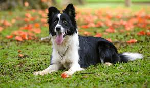
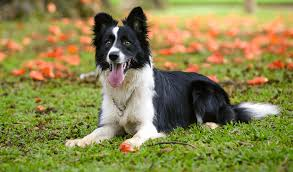
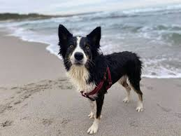

Il Border Collie
Caratteristiche generali
Il border collie è un cane originario del confine tra la Scozia e l'Inghilterra, cui il nome border
che significa confine.
Si tratta di un cane ben proporzionato dall'aspetto armonioso e atletico.

Si tratta di un cane ben proporzionato dall'aspetto armonioso e atletico.

Alcune caratteristiche peculiari sono le seguenti:
- Ha, in genere, una coda moderatamente lunga, attaccata bassa, ben fornita di peli, (in genere sono più lunghi che sul resto del corpo, quasi il doppio),che termina ricurva verso l'alto. In azione può alzarsi, ma non è mai portata sul dorso.
- Il cane è di taglia media con pelo che può essere lungo(5-7 cm) oppure corto.
Il tipo più diffuso è il bianco-nero. - Gli occhi sono ben distanziati, ovali, di grandezza media. Il colore è bruno, tranne che nel soggetto blu merle per il quale possono essere singolarmente o entrambi blu.
- Le orecchie sono di taglia e di tessitura media portate erette, semierette o appoggiate sul cranio.
- Il cranio è piuttosto largo, con apofisi occipitale non pronunciata e presenta un muso forte
Le guance non sono nè piene nè tondeggianti. - Le zampe sono ovali, con cuscinetti plantari spessi e forti.
Dita arcuate e strette. - Ha un'andatura sciolta, regolare e scorrevole
Allevamento e Addestramento

È un cane robusto e longevo (raggiunge facilmente i 15 anni di età) che non ha bisogno di cure particolari.
Delle spazzolate regolari sono sufficienti per mantenere in buone condizioni il mantello; le spazzolate dovranno essere più frequenti nel periodo della muta: una volta l'anno (primavera/estate) per i maschi, due volte l'anno (in corrispondenza dei periodi di estro) per le femmine.
È ritenuto estremamente intelligente, addirittura la razza canina più brillante e sveglia, soprattutto perché impara molto in fretta.
Per altre nozioni riguardo all'addestramento e alle attività da svolgere con un border collie dai un'occhiata qui: Border collie - attività
Delle spazzolate regolari sono sufficienti per mantenere in buone condizioni il mantello; le spazzolate dovranno essere più frequenti nel periodo della muta: una volta l'anno (primavera/estate) per i maschi, due volte l'anno (in corrispondenza dei periodi di estro) per le femmine.
È ritenuto estremamente intelligente, addirittura la razza canina più brillante e sveglia, soprattutto perché impara molto in fretta.
Per altre nozioni riguardo all'addestramento e alle attività da svolgere con un border collie dai un'occhiata qui: Border collie - attività
Curiosità:
Due ricercatori americani, specializzati in psicologia comportamentale, hanno dimostrato come Chaser,
un giovane esemplare femmina di border collie da loro addestrato, abbia imparato 1.022 parole nell'arco
di tre anni.
Pastorizia
Questo cane è ancora oggi usato nelle greggi per controllare le pecore.
Effettivamente, al giorno d'oggi il border collie può essere considerato l'emblema del cane conduttore e a
livello mondiale, sia nella pratica dello
sheepdog
che nella vera e propria pastorizia è la razza più utilizzata,
per la sua intelligenza, obbedienza e rapidità di movimento.

Se ti interessano le attività da poter svolgere con il tuo border collie vai alla pagina: Attività border collie